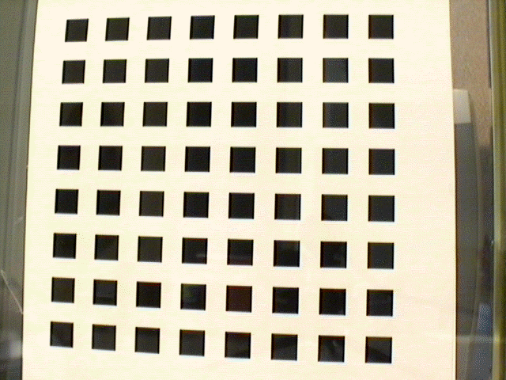
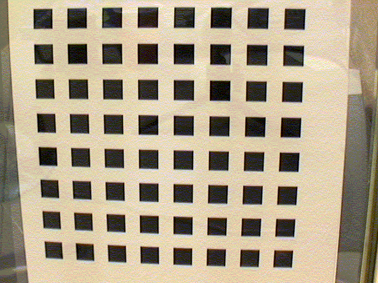
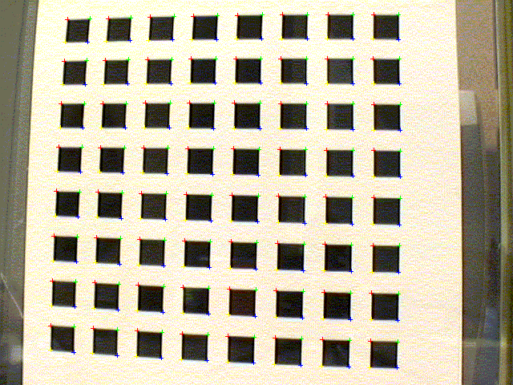
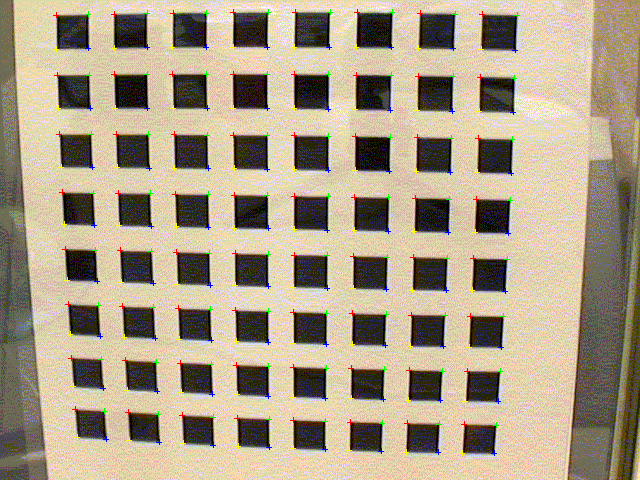
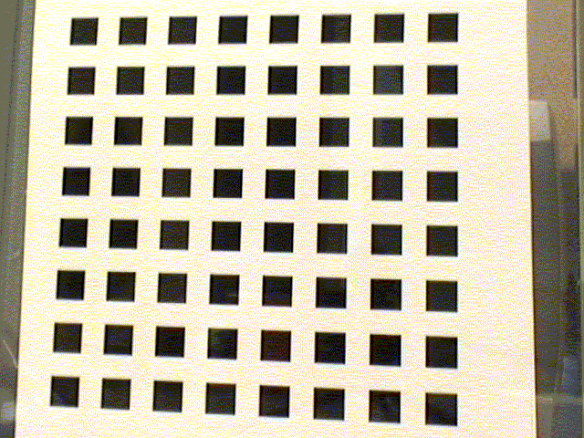
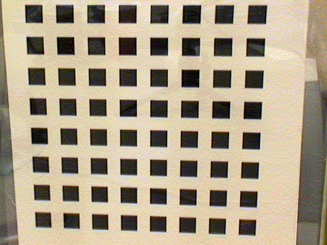

We propose a flexible new technique to easily calibrate a camera. It is well suited for use without specialized knowledge of 3D geometry or computer vision. The technique only requires the camera to observe a planar pattern shown at a few (at least two) different orientations. Either the camera or the planar pattern can be freely moved. The motion need not be known. Radial lens distortion is modeled. The proposed procedure consists of a closed-form solution, followed by a nonlinear refinement based on the maximum likelihood criterion. Both computer simulation and real data have been used to test the proposed technique, and very good results have been obtained. Compared with classical techniques which use expensive equipments such as two or three orthogonal planes, the proposed technique is easy to use and flexible. It advances 3D computer vision one step from laboratory environments to real world use.
Full text available as a Technical report in PDF (846KB)
The model plane contains a pattern of 8x8 squares, so there are 256 corners. The size of the pattern is 17cm x 17cm. The 2D coordinates (in inches) of these points are available here. (We assume the plane is at Z=0.)
We have taken five an off-the-shelf PULNiX CCD camera with 6 mm lens. The image resolution is 640x480. The five images are available here: Image 1, Image 2, Image 3, Image 4 and Image 5. The first two are shown below. We can observe a significant lens distortion in the images.


The corners were detected as the intersection of straight lines fitted to each square. The image coordinates are available here: image points 1, image points 2, image points 3, image points 4 and image points 5. Below we show the first two images with detected points indicated as +.


(other images with marked points are available here: marked 3, marked 4, and marked 5.)
And here is what the calibration tells us about the camera: The pixel is square (aspect ratio = 1); the focal length = 832.5 pixels; the image center is at (303.959, 206.585); there is a significant radial distortion: k1 = -0.228601, k2 = 0.190353. The complete calibration result is available here. (The format of the calibration file is: a, c, b, u0, v0, k1, k2, then the rotation matrix and translation vector for the first image, the rotation matrix and translation vector for the second image, etc.)
The estimated distortion parameters allow us to correct the distortion in the original images. Below, we show the first two such distortion-corrected images, which should be compared with the first two images shown above. We see clearly that the curved pattern in the original images is straightened.


Two images of a tea tin (see below) were taken by the same camera as used above for calibration.
Mainly two sides are visible. After correcting the radial distortion (tea tin 1, tea tin 2), we manually picked 8 point matches on each side. The matches are here for mage 1 and here for mage 2.
The structure-from-motion software we developed ealier was run on these 16 point matches to build a partial model of the tea tin. The reconstructed model is in VRML. The reconstructed points on each side are indeed coplanar, and we computed the angle between the two reconstructed planes which is 94.7 degrees. Although we do not have the ground truth, but the two sides of the tea tin are indeed almost orthogonal to each other.
Click here to view the reconstructed tea tin in VRML.
¡¡
<% Call GetFooter() %>{kind=link}
{kind=link}
{kind=link}
{kind=link}
{kind=link}
{kind=link}
{kind=link}
{kind=link}
{kind=link}
{kind=link}